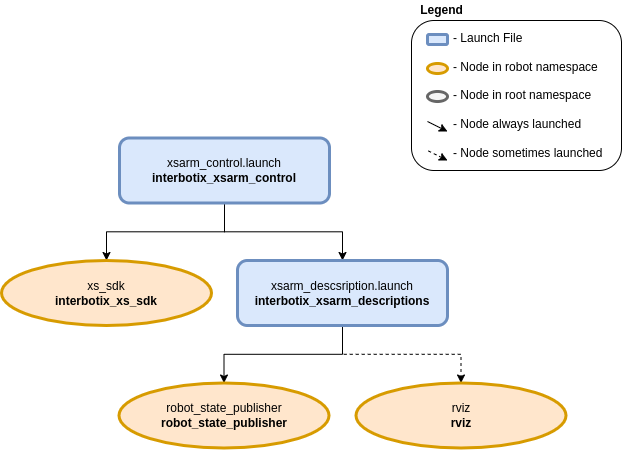

Arm Control
 View Package on GitHub
View Package on GitHub
Overview
This package contains the configuration and launch files necessary to easily start the Interbotix
Arm platform. This includes launching the xs_sdk node responsible for driving the DYNAMIXEL
motors on the robot and loading the URDF to the robot_description parameter. Essentially, this
package is what all ‘downstream’ ROS packages should reference to get the robot up and running.
Structure
As shown in the image above, the interbotix_xsarm_control package builds on top of the interbotix_xsarm_descriptions and interbotix_xs_sdk packages. Please take a look at those packages to get familiar with their nodes. You will also notice a config directory containing many YAML files. Each file (beside the modes.yaml one) specifies the names and initial register values for all the motors that make up a specific robot arm. There is also some ‘meta-info’ like names of joint groups, the desired joint-topic name and publishing frequency, etc… For a full explanation of each of these parameters, check out the Motor Config file template. The other file located in that directory is the Mode Config one (a.k.a modes.yaml). The parameters in there define the desired operating modes for either a group of joints or single joints, and whether or not they should be torqued on/off at node startup. See more by referencing the Mode Config file template. Typically, the Motor Config file is only defined here while the Mode Config file is also defined in any ‘downstream’ ROS package. This makes it easy for users to configure their desired motor operating modes depending on their project.
Usage
To run this package on the physical robot, type the line below in a terminal (assuming the WidowX-200 arm is being used).
$ roslaunch interbotix_xsarm_control xsarm_control.launch robot_model:=wx200
To run this package on a simulated robot, run the command below in a terminal (assuming the WidowX-200 arm is being used).
$ roslaunch interbotix_xsarm_control xsarm_control.launch robot_model:=wx200 use_sim:=true
To further customize the launch file at run-time, refer to the table below.
| Argument | Description | Default Value |
|---|---|---|
| robot_model | model type of the Interbotix Arm such as ‘wx200’ or ‘rx150’ | “” |
| robot_name | name of the robot (typically equal to robot_model, but could be anything) |
“$(arg robot_model)” |
| base_link_frame | name of the ‘root’ link on the arm; typically ‘base_link’, but can be changed if attaching the arm to a mobile base that already has a ‘base_link’ frame | ‘base_link’ |
| show_ar_tag | if true, the AR tag mount is included in the ‘robot_description’ parameter; if false, it is left out; set to true if using the AR tag mount in your project | false |
| show_gripper_bar | if true, the gripper_bar link is included in the ‘robot_description’ parameter; if false, the gripper_bar and finger links are not loaded to the parameter server. Set to false if you have a custom gripper attachment | true |
| show_gripper_fingers | if true, the gripper fingers are included in the ‘robot_description’ parameter; if false, the gripper finger links are not loaded to the parameter server. Set to false if you have custom gripper fingers | true |
| use_world_frame | set this to true if you would like to load a ‘world’ frame to the ‘robot_description’ parameter which is located exactly at the ‘base_link’ frame of the robot; if using multiple robots or if you would like to attach the ‘base_link’ frame of the robot to a different frame, set this to false | true |
| external_urdf_loc | the file path to the custom urdf.xacro file that you would like to include in the Interbotix robot’s urdf.xacro file | “” |
| use_rviz | launches RViz | true |
| motor_configs | the file path to the ‘motor config’ YAML file | refer to xsarm_control.launch |
| mode_configs | the file path to the ‘mode config’ YAML file | refer to xsarm_control.launch |
| load_configs | a boolean that specifies whether or not the initial register values (under the ‘motors’ heading) in a Motor Config file should be written to the motors; as the values being written are stored in each motor’s EEPROM (which means the values are retained even after a power cycle), this can be set to false after the first time using the robot. Setting to false also shortens the node startup time by a few seconds and preserves the life of the EEPROM | true |
| use_sim | if true, the Dynamixel simulator node is run; use RViz to visualize the robot’s motion; if false, the real Dynamixel driver node is run | false |